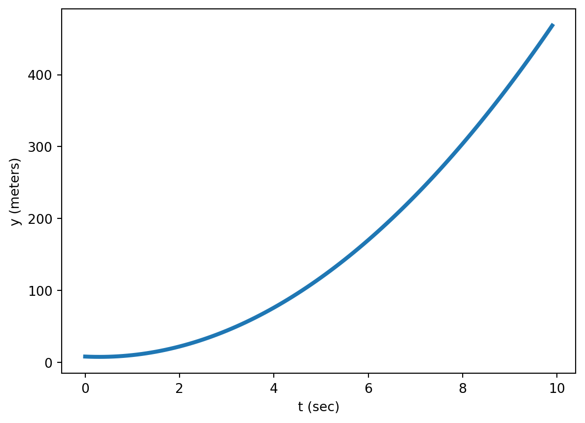
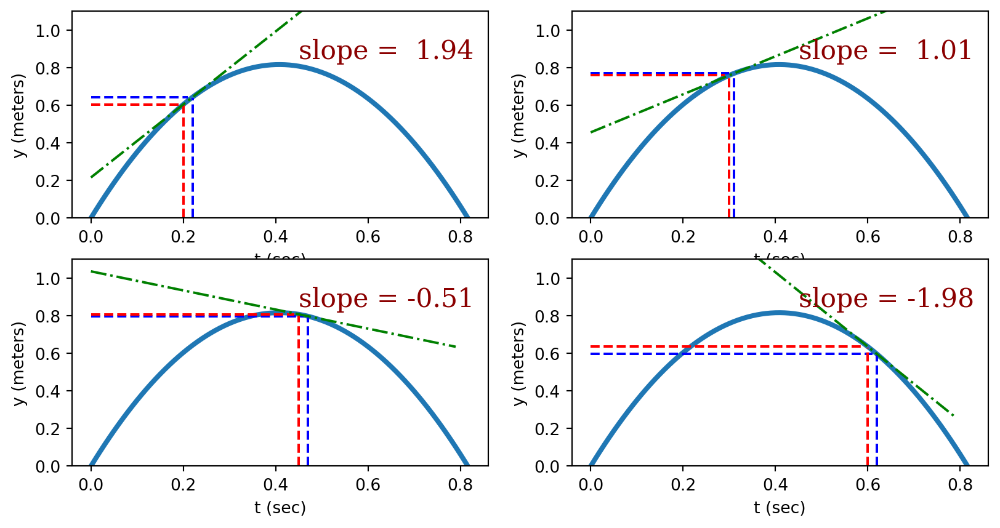
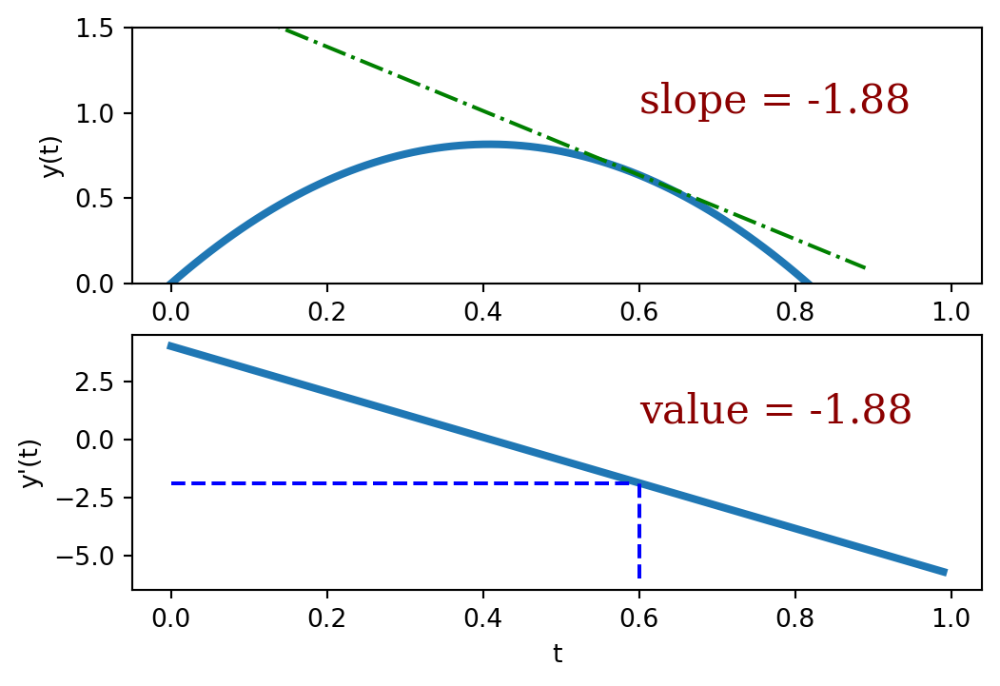

Lab 2: Propagation of Uncertainty I
Name:
Skills
- Propagate uncertainty for moderately complex equations.
- Use Python to perform simple calculations, construct summary tables (pandas dataframes), and display plots including error bars.
- Learn the difference between independent and dependent uncertainties and be able to propagate uncertainty for both cases.
- Use graphs to uncover relationships between data.
Background Information
The Slope of a Function
This week we will be performing derivatives, which is a calculus concept. Since some of you are not familiar with the derivative, I will give some explanation. I assume that all of you are familiar with the simple linear function
\[y = m x + b\]
and if you were asked what the slope of this function was you would say \(m\), the number that multiplies the independent variable \(x\). In other words,
\[m = {\Delta y \over \Delta x}\]
where \(\Delta y = y_2 -y_1\) and \(\Delta x = x_2 -x_2\).
For example consider the function:
\[y(t) = 5 t + 2\]
which is plotted below.
Careful inspection of this graph reveals that indeed the function value (\(y\)) does increase by \(5\) meters for every \(1\) second that elapses. The slope of this function is 5 no matter which two points we choose to use when calculating \(\Delta y\) and \(\Delta t\).
\[{dy \over dt} = {(5 ~\text{m}) - (0 ~\text{m})\over (1 ~\text{s}) - (0 ~\text{s})} ={5 ~\text{m}\over 1 ~\text{s}} = 5 ~\text{meters}/ \text{second} (\text{ using (0,0) and (1,5)})\]
\[{dy \over dt} = {(2.5 ~\text{m}) - (0 ~\text{m})\over (0.5 ~\text{s}) - (0 ~\text{s})} ={2.5 ~\text{m}\over 0.5 ~\text{s}} = 5 ~\text{meters}/ \text{second}(\text{ using (0,0) and (0.5,2.5)})\]
\[{dy \over dt} = {(1 ~\text{m}) - (0 ~\text{m})\over (0.2 ~\text{s}) - (0 ~\text{s})} = {1 ~\text{m}\over 0.2 ~\text{s}} = 5 ~\text{meters}/ \text{second}(\text{ using (0,0) and (0.2,1)})\]
This is great, but not all curves are straight lines. In fact, most of the functions that matter will not be straight lines. So let’s look at an example of a curve that isn’t straight.

If asked to calculate the slope of this curve, you might get stuck since the slope varies continuously (i.e the slope is different at every point). Let’s imagine that we’d like to know the slope of this function at \(t = 0.2\) s. We can make a first attempt at this by finding the slope of the line that passes through the points at \(t= 0.2\) and \(t = 0.45\) (top left plot). Improvements to this can be made by slowly bringing these two points closer together. Eventually, the two points become so close together that the resulting line is tangent to the function at \(t= 0.2\). The slope of this function at \(t = 0.2\) is equal to the tangent line at that point.

Let’s visualize the tangent line for several different points on this function.
The derivative
What we really need is a new function that gives the slope of the original function. This is called a derivative and it is represented like this:
\[y(x) = {df(x) \over dx}\]
The value of the function \(y(x)\) gives the slope of the function \(f(x)\). For example, if \(f(x) = x^2\), then \(y(x) = {df(x) \over dx} = 2x\). Let’s plot both of those functions next to each other to convince ourselves that the value of \(y(x)\) is the slope of \(f(x)\).

To find the function that gives the slope of another function we can follow a set of mathematical rules. One of the most common rules is the chain rule which applies to polynomial functions. Specifically, if \(f(x) = a + bx + cx^2 + dx^2 + \dots = \sum_n a_n x^n\), then
\[ y(x) = f'(x) = a_n (n - 1) x^{n-1}\]
The derivative of other common functions is given in the table below. Your calculus class will teach you how to find the derivative of more complicated functions than those found in the table.
| Function (\(f(x)\)) | Derivative (\(y(x) = f'(x)\)) |
|---|---|
| \(f(x) = \sin(a x)\) | \(y(x) = a \cos(a x)\) |
| \(f(x) = \cos(a x)\) | \(y(x) = -a \sin(a x)\) |
| \(f(x) = \tan(a x)\) | \(y(x) = a \sec(a x)^2\) |
| \(f(x) = e^{a x}\) | \(y(x) = ae^{a x}\) |
| \(f(x) = \ln(a x)\) | \(y(x) = {a \over x}\) |
| \(f(x) = {a \over x}\) | \(y(x) = -{a \over x^2}\) |
Using the derivative to find uncertainty.
So how does the derivative help us calculate uncertainty. Let’s consider an example where we measure the frequency (\(f\)) of a certain light beam to be \(f = 4.2 \pm 0.5 \times 10^{15}\) Hz and want to calculate the wavelength \(\lambda\) (with its associated uncertainty).
\[ \lambda = {3 \times 10^8 \over f}\]
A plot of this function is given below

If \({df \over dx}\) is the slope of the tangent line (\({\Delta f \over \Delta x}\)), then multiplying this slope by \(\Delta x\) will give the change in function value over this distance. In the context of uncertainty, \({df \over dx}\) is the derivative of the calculated value and multiplying this by the uncertainty in \(x\) (\(\delta x\)) produces the uncertainty in the calculated value.
\[ \delta f = {df \over dx} \delta x \]
This equation can be extended to functions of more than one variable by adding the square of each contribution:
\[(\delta f)^2 = ({\partial f\over \partial x} \delta x)^2 + ({\partial f\over \partial y}\delta y)^2 + \dots\]
This is the most important formula for uncertainty propagation and the one we will use going forward.
An Example
Imagine measuring the dimensions and mass of a block with their associated uncertainties:
\[l = 5.2 \pm 0.1 ~\text{cm}\]
\[w = 8.4 \pm 0.3 ~\text{cm}\]
\[h = 10.8 \pm 0.4 ~\text{cm}\]
\[m = 345 \pm 5 ~\text{grams}\]
and proceeding to calculate the density of the block
\[\rho = {m \over V} = {m \over l \times w \times h}\]
= 0.73 g/cm^3To calculate the uncertainty, we must first take four derivatives with respect to \(l\), \(w\), \(h\), and \(m\):
\[ {\partial \rho \over l} = -{m \over l^2 w h}\]
\[ {\partial \rho \over h} = -{m \over l w h^2}\]
\[ {\partial \rho \over w} = -{m \over l w^2 h}\]
\[ {\partial \rho \over m} = {1 \over l w h}\]
Now we can calculate the uncertainty as
\[\delta \rho = \sqrt{({\partial \rho \over \partial l} \delta l)^2 + ({\partial \rho \over \partial w} \delta w)^2 + ({\partial \rho \over \partial h} \delta h)^2 + ({\partial \rho \over \partial m} \delta m)^2}\]
\[ = \sqrt{(-{m \over l^2 w h} \delta l)^2 + (-{m \over l w^2 h} \delta w)^2 + (-{m \over l w h^2} \delta h)^2 + ({1 \over l w h} \delta m)^2}\]
\[ = \sqrt{(-{(345 ~\text{grams}) \over (5.42 ~\text{cm})^2 (8.4 ~\text{cm}) (10.8 ~\text{cm})} (0.1 ~\text{cm}))^2 + (-{(345 ~\text{grams}) \over (5.42 ~\text{cm}) (8.4 ~\text{cm})^2 (10.8 ~\text{cm})} (0.3 ~\text{cm}))^2 + (-{(345 ~\text{grams}) \over (5.42 ~\text{cm}) (8.4 ~\text{cm}) (10.8 ~\text{cm})^2} (0.4 ~\text{cm}))^2 + ({1 \over (5.42 ~\text{cm}) (8.4 ~\text{cm}) (10.8 ~\text{cm})} (5 ~\text{grams}))^2}\]
In the code cell below we use python to calculate this uncertainty.
from numpy import sqrt
m = 345
dm = 5
l = 5.2
dl = 0.1
w = 8.4
dw = 0.3
h = 10.8
dh = 0.4
rho = m/l/w/h
drdl = -m/l**2/w/h
drdw = -m/l/w**2/h
drdh = -m/l/w/h**2
drdm = 1/l/w/h
drho = sqrt((drdl * dl)**2 + (drdw * dw)**2 + (drdh * dh)**2 + (drdm * dm)**2)
print(f"The density of the block is {rho:5.2f} +- {drho:4.2f} g/cm^3")The density of the block is 0.73 +- 0.04 g/cm^3Activity I: The pendulum (50 pts)
Equipment needed:
- Pendulum. (We have some pre-made, or you can tie a string to a mass)
- Metal support stand for pendulum to swing from.
- Photogate.
Goal:
By taking measurements on a simple pendulum, calculate the acceleration due to gravity with its associated uncertainty. Compare to the known value for Rexburg.
Procedure:
- Assemble five pendulums of different lengths, with the lengths ranging from \(0.25\) m to \(2.0\) m.
- For each pendulum, perform the following:
- Measure the distance from the support point to the center of the pendulum. This is the length of the pendulum \(L\). Assign an uncertainty to this measurement and record the length with its associated uncertainty in the code cell provided below.
- Release the pendulum from a small initial angle (no bigger than \(15^\circ\) from the vertical) and use the photogate to measure the period \(T\) of the pendulum with its associated uncertainty. (The period of a pendulum is the time it take to make one full cycle.)
- Calculate the acceleration due to gravity (\(g\)) using \(g = {4 \pi^2 L \over T^2}\).
- Using the methods discussed above determine the equation for calculating the uncertainty in \(g\). Insert it into the math equation below \[ \delta g = \]
- Calculate the uncertainty and fractional uncertainty in \(g\) in the code cell below.
- In lines 4,5, and 6 of the cell below record all of your length, period, and g values for the five pendulums.
- In lines 7,8, and 9 record all of the uncertainties for the five pendulums.
- When you execute the cell, you will see a table summarizing your results and two plots to help analyze your results. Analyze the results to answer the following questions:
- Which result has the lowest uncertainty? Can you explain why?
- What function do you think best represents the relationship between \(L\) and \(T\)?(We will study curve-fitting in a later lab.)
- The accepted value of \(g\) for Rexburg is \(g = 9.80056\) m/s\(^2\). Do your calculations agree with this value to within your calculated uncertainties? > Response:
# Pendulum Parameters
T = # period of the pendulum
un_T = # uncertainty of the period of the pendulum
L = # length of the pendulum
un_L = # uncertainty of the length of the pendulum
# Compute volume of the room with uncertainty
g = # Compute a value for g
un_g = # Compute the uncertainty in g.
frac_g = # Fractional uncertainty in g
print("The acceleration due to gravity is: {0:4.1f} +/- {1:3.1f} m/s^2. That's a fractional uncertainty of {2:6.2f}%.".format(g,un_g, 100 * frac_g))import matplotlib.pyplot as plt
from pandas import DataFrame
import numpy as np
%matplotlib inline
periods = [,,,,] # Line 4
lengths = [,,,,] # Line 5
gvalues = [,,,,] # Line 6
un_length = [,,,,] # Line 7
un_period = [,,,,] # Line 8
un_g = [,,,,] # Line 9
df = DataFrame(np.transpose([periods,un_period,lengths,un_length,gvalues,un_g]),columns = ["T (s)","δT (s)","L (m)","δL (m) ","g (m/s^2)","δg (m/s^2)"],index = list(range(1,4)))
display(df)
fig = plt.figure()
ax1 = fig.add_subplot(1,2,1)
ax2 = fig.add_subplot(1,2,2)
ax1.errorbar(lengths,periods,yerr = un_period,xerr = un_length,fmt = 'go', capsize = 6)
ax1.set_aspect(1)
ax1.set_xlabel("L (meters)")
ax1.set_ylabel("T (seconds)")
ax1.set_title("Period vs Length for five pendulums")
ax2.errorbar(lengths,gvalues,yerr = un_g,fmt = 'ro', capsize = 6)
ax2.set_aspect(1)
ax2.set_xlabel("L (meters)")
ax2.set_ylabel("g (m/s^2)")
ax2.set_title("g vs Length for five pendulums")
plt.show()Activity II (50 points)
Equipment needed
- Meter Stick
- Stopwatch (the one on your phone will do fine.)
- Tennis ball.
Goal
By measuring the fall time for an object in free fall, calculate the acceleration due to gravity here in Rexburg.
Procedure
- Find a location in the building that will allow the greatest drop distance for the tennis ball. (the front foyer is a good choice.) Measure the distance from the release point to the ground with its associated uncertainty. Record your values in the code cell provided below.
- Using a stopwatch, measure the fall time with its associated uncertainty. Record the values in the code cell provided below.
- Using the equation below, calculate the acceleration due to gravity. \[ g = {2 h \over t^2}\]
- Using the methods discussed above determine the equation for calculating the uncertainty in \(g\). Insert it into the math equation below \[ \delta g = \]
- Using the equation from step 4, calculate the uncertainty in \(g\) in the code cell below.
- Repeat steps 1 - 5 ten more times to obtain ten values of \(g\) and \(\delta g\).
- Put all of your data in the code cell provided below (the second code cell) and execute the cell to reveal a summary table and plots that summarize your results.
- Using your results, answer the following questions:
- Are your ten g values consistent with one another to within their stated uncertainties. Explain.
- What function do you think describes the relationship between the fall distance and the fall time. (We will study curve-fitting in a later lab.)
- Which of your g values agree with the accepted value of g for Rexburg given in the first exercise.
Response:
- Take a minute to inspect all of the code that I have given to you today. Ask questions about code that you don’t understand. As some point, you’ll have to recreate code like this on your own.
t = # Time in air in sec
un_t = # Uncertainty of time measurement in sec
h = # Height in meters
un_h = # Uncertainty of height in meters
g = # Calculate g using equation above
un_g = # Calculate uncertainty in g
frac_g = # Fractional uncertainty in g
print("g : {0:4.2f} +/- {1:4.2f} m/s^2. That's a fractional uncertainty of {2:6.2f}%.".format(g,un_g,frac_g))import matplotlib.pyplot as plt
import numpy as np
from pandas import DataFrame
%matplotlib inline
trial = [1,2,3,4,5,6,7,8,9,10]
fallDistances = [,,,,,,,,,]
un_distance = [,,,,,,,,,]
fallTimes = [,,,,,,,,,]
un_time = [,,,,,,,,,]
g = [,,,,,,,,,]
un_g = [,,,,,,,,,]
df = DataFrame(np.transpose([fallDistances,un_distance,fallTimes,un_times,gvalues,un_g]),columns = ["Fall Distance (m)","δd (m)","Fall Times (s)","δt (s) ","g (m/s^2)","δg (m/s^2)"],index = list(range(1,4)))
display(df)
fig = plt.figure()
ax1 = fig.add_subplot(1,2,1)
ax2 = fig.add_subplot(1,2,2)
ax1.errorbar(trial,g,yerr = un_g,fmt = 'go', capsize = 6)
ax1.set_aspect(1)
ax1.set_xlabel("trial")
ax1.set_ylabel("g (m/s^2)")
ax1.set_title("Acceleration due to gravity for 10 experiments")
ax2.errorbar(fallTimes,fallDistances,yerr = un_distance,xerr=un_time,fmt = 'ro', capsize = 6)
ax2.set_aspect(1)
ax2.set_xlabel("Fall Times (sec)")
ax2.set_ylabel("Fall Distance (m)")
ax2.set_title("Fall Distance vs. Fall Time.")
plt.show()from numpy import array
from statistics import mean, stdev
h = # Height in meters
t_10 = array([ , , , , , , , , , ],float) # Enter your ten time measurements
g = # Calculate g for all time measurements
g_avg = mean(g) # calculate mean
g_stdev = stdev(g) # calculate standard deviation
print("The average value for g is: {0:4.1f} m/s^2".format(g_avg))
print("The standard deviation for the g values is: {0:4.2f} m/s^2".format(g_stdev))- Given a choice, would you prefer to report your value of g and its uncertainty from part (a), or your value just calculated? Give a reason for your answer.
Response: